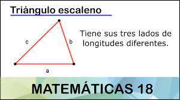

Triangulo Escaleno
¿Qué es?
Un triángulo escaleno es un triángulo en el cual los tres lados tienen longitudes diferentes. También los ángulos de un triángulo escaleno tienen diferentes medidas. Algunos triángulos rectángulos pueden ser un triángulo escaleno cuando los otros dos ángulos o los catetos no son congruentes.
Formula para calcular el area
Para calcular el área de un tri&ngulo escaleno es posible calcular mediante el producto de la base por la altura y dividiendo entre dos.
Calcular el perímetro
Las características de este polígono se pueden medir en base a las siguientes fórmulas: Perímetro(P): Sumamos los lados. P = a + b + c.
Caracteristcas

- Tres vértices, identificados en la imagen con las letras A, B y C.
- Tres lados de diferente longitud. El segmento AB (el que va del vértice A al vértice B) tiene una longitud de a (minúscula); BC tiene una longitud de b. Finalmente, AC tiene una longitud de c. En la imagen a = 5 cm; b = 6 cm y c = 3,6 cm.
- Tres ángulos de diferente amplitud, identificados en la imagen con las letras griegas α (alfa), β (beta) y γ (gamma), los cuales suman 180 grados en total. La amplitud de cada ángulo es: α = 87º; β = 37º; γ = 56º.